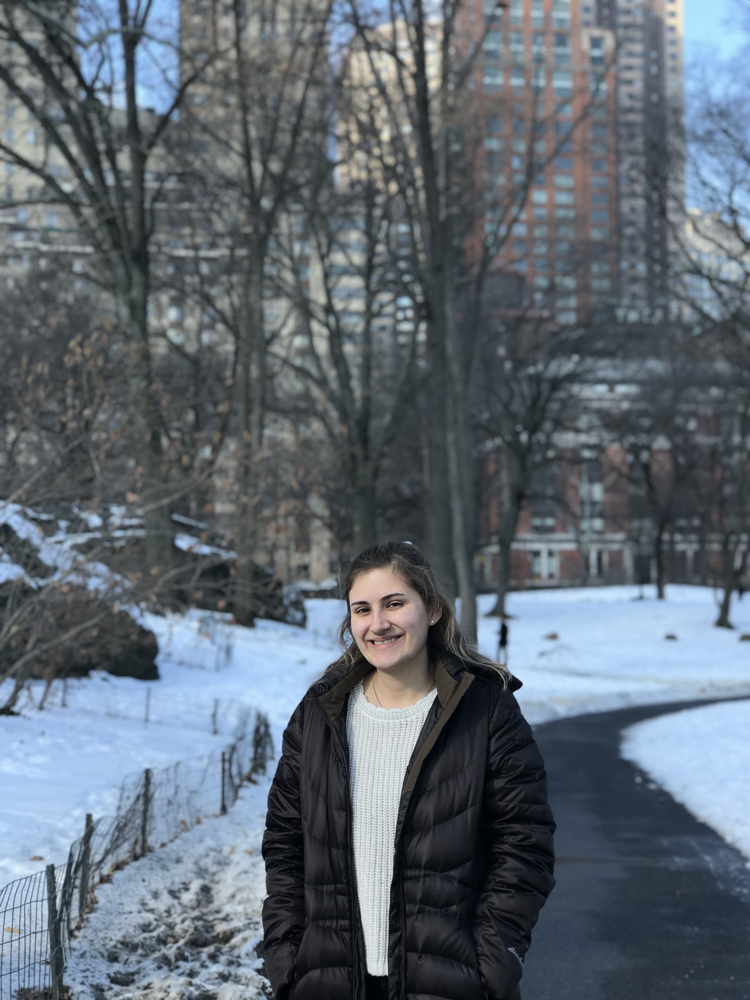

My name is Anna Natalie Chlopecki (she/her), and I am a mathematics graduate student at Purdue University. I grew up in the Chicago Metropolitan Area of Illinois. In 2020, I graduated from the University of Illinois at Urbana-Champaign with a BS in Mathematics and a minor in Criminology, Law, and Society. Currently, I am interested in topics within the intersection of Algebraic Geometry, Combinatorics, and Commutative Algebra, and I am working under the guidance of Uli Walther. In my free time, I enjoy playing tennis and reading books.
Email: achlopec@purdue.edu
Address: Mathematical Sciences Building, 150 N. University Street, Office G142, West Lafayette, IN
In progress.
In progress.
The purpose of this seminar is to provide graduate students a space to present mathematics which they deem interesting to their peers. For the '23-24 school year, I am co-organizing Student Colloquium with Julia Garner. For scheduling information, consult the Purdue Math Department Calendar. Please reach out if you are interested in speaking at the seminar or would like to be added to the mailing list.
For the '23-24 school year, I am one of four Purdue Mathematics Department Graduate Representatives, acting as a liaison between the Math Department and its graduate students.